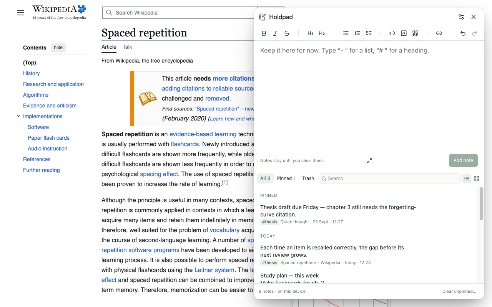

Quick notes and a notepad for any page
Holdpad is a free Chrome extension that opens a notes panel beside the page you are on. Jot a thought, save selected text or a link, and find it again in a second. Private, offline, no sign-up.
Add to Chrome — it's freeWorks in Google Chrome 141 and later · English, हिन्दी, Español, Português, Deutsch, Français, Bahasa Indonesia, 日本語

Everything a quick notes app needs, right next to the page
Write without switching tabs
Press Alt+Shift+N or click the icon, type, and save with Ctrl/Cmd+Enter.
Save text from any website
Select, right-click, Save selection to Holdpad. Links, formatting and the source page come too.
Keep links and pages
Right-click a link or a page to keep it with its title, like a tiny web clipper.
A real notepad
Headings, lists, checklists, quotes, links and code blocks, with Markdown shortcuts as you type.
Instant search
Ctrl/Cmd+K searches every note, source page and tag, with matches highlighted.
Pin, tag, clear
Pin what must stay, tag to group, and clear the rest when you are done. Undo and a 30-day Trash have your back.
List or card view
Scan titles fast, or read every note in full.
Export anytime
A backup you can restore, or one Markdown file for Obsidian, Notion or an email.
Light, dark, yours
System, light or dark mode, six palettes, accent colours, and sans, serif or mono text.
Private notes, by design
Stored on your device
Notes live only in Chrome's local storage on this computer. No account, no cloud.
No network access
The extension cannot connect to the internet at all, so your notes cannot leave your computer.
No access to your sites
Nothing to grant at install. Holdpad reads a page only when you ask it to.
How to start
- Add Holdpad to Chrome and pin it to your toolbar (puzzle-piece icon → pin).
- On any page, click the icon or press Alt+Shift+N.
- Type a note and press Ctrl/Cmd+Enter — or select text, right-click, and choose Save selection to Holdpad.
Good for students collecting quotes, researchers comparing sources, developers keeping commands and error messages, and anyone who needs a scratchpad beside their work.
Questions
Is Holdpad free?
Yes. Holdpad is free, with no account, no ads and no paid tier.
Where are my notes stored?
Only on your computer, in Chrome's local extension storage. The extension has no network access, so it cannot send your notes anywhere.
How do I save text from a web page?
Select the text, right-click, and choose “Save selection to Holdpad”. Links, bold, lists and code blocks are kept, along with the page it came from.
Does Holdpad work offline?
Yes. Everything runs in your browser, so notes can be written, searched and exported without an internet connection.
Can I export my notes?
Yes. Export a full backup you can restore later, or one readable Markdown file for Obsidian, Notion, a document or an email.
What happens if I clear a note by mistake?
Press Undo straight away, or restore it from Trash, where cleared notes are kept for 30 days.